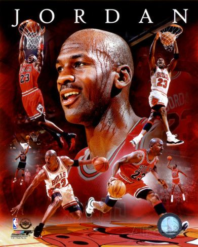

（英語：Michael Jeffrey Jordan，縮寫MJ，1963年2月17日－）是前美國NBA職業籃球運動員，綽號空中飛人、籃球大帝、籃球之神。身高6英尺6英寸（198公分），體重216磅。主打位置為得分後衛和小前鋒，球衣背號23號，20世紀世界上最具影響力的運動員之一。
1984年畢業於美國北卡羅萊那州的北卡羅來納大學教堂山分校，在NBA選秀中以第一輪第三順位被芝加哥公牛選中。先後三次宣布退休，前13個賽季效力於芝加哥公牛，生涯最後2個賽季則在華盛頓巫師。退休後買下了夏洛特山貓（現名為夏洛特黃蜂），成為球隊老闆
在15年的職業生涯中，喬丹總共獲得6次NBA總冠軍，6次NBA總決賽最有價值球員，5次NBA最有價值球員，10次入選NBA最佳陣容，更史無前例地獲得十屆NBA得分王，其中有七屆（1987~93）是蟬聯。
他目前仍保持NBA常規賽球員職業生涯的每場平均得分最高紀錄（30.12分）和季後賽每場平均得分最高紀錄（33.45分）。喬丹在2009年入選籃球名人堂，與他一同建立公牛王朝的教頭「禪師」菲爾·傑克森（Phil Jackson）形容他是「當代穿著寬鬆運動短褲的米開朗基羅」，NBA官方網站則稱：「以讚譽而言，麥可·喬丹是史上最偉大的籃球運動員。」[1]
喬丹在90年代獨領風騷，使同時期的派屈克·尤英、查爾斯·巴克利、科爾·馬龍和約翰·史托克頓等球星均無緣NBA總冠軍。他招牌的後仰跳投（Fade away），已成為籃球運動最著名的高等技巧之一。